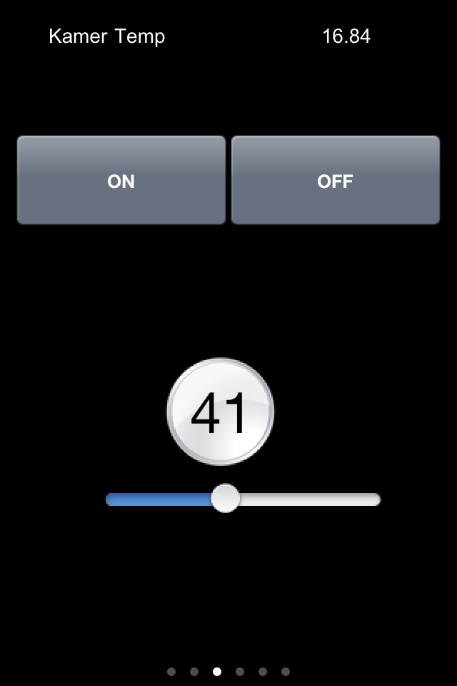

Dear all,
It took me a while to get it right but now I can make a KNX slider work and see the lights dim and brighten. As I spend so much time on it, I would like to share this with you to get a starting point. Although I did not solve everything (to this later more) the basics work. Hw did I do it?
I have in ETS3 the following values for my dimmer:
2/1/5 ON/OFF (1bit)
2/2/5 Dimmer (4 bits)
2/3/5 Value (1 Byte)
2/4/5 Status (1 bit)
I linked the Value (2/3/5) to a command with KNX command: Scale, type 5.001. I linked the Dimmer (2/2/5) to a command with KNX command: Status, type 5.001. Then to the Sensor I added this Dimmer (Status) command, and made it type Level (or Range). The slider uses this Sensor (with the Dimmer (4 bits)) and to setValue I used the Value (Scale) command. Hope this makes sense to you.
This is what I got as a result in the generated controller.xml:
<command id="54" protocol="knx">
<property name="command" value="Scale" />
<property name="groupAddress" value="2/3/5" />
<property name="DPT" value="5.001" />
</command>
<command id="56" protocol="knx">
<property name="command" value="Status" />
<property name="groupAddress" value="2/2/5" />
<property name="DPT" value="5.001" />
</command>
Let me add some snapshots:

However, while sliding it back and forth, it never switches the lights completely off when the slider hits "0".
Also if I push the switches on the wall, the slider is not moving on the screen. If you have been making a slider yourself, and it works like in the video, please help. I am out of any ideas where to look to solve this
Form the different posts it looks all similar and good, but my slider is not updating automagically. For completeness, I am running the OpenRemote controller 2.0.0_snapshot_20110611.
{kind=link}
|
I already posted in the other thread. Maybe that will help. Also, if your lights don't turn off when dimming to zero make sure your KNX dimmer device is configured correct. |
|
Good tutorial! I don't know if the issue with the sliders not reading the correct value back has been solved and maybe described in another forum message? Otherwise, is there an update on this issue? Regards |
|
I am not sure about the issue but a 4bit DPT is wrong. |
|
Hi, I know that it doesn't make any sense but its working for me. Good Luck Jay |